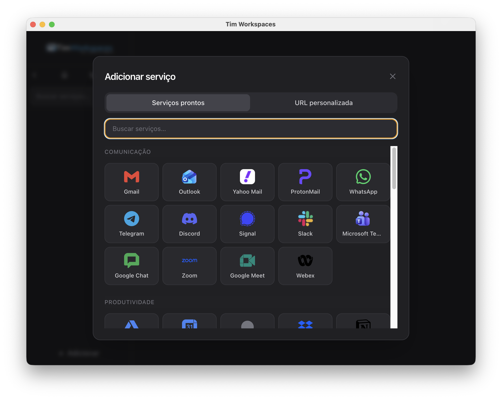
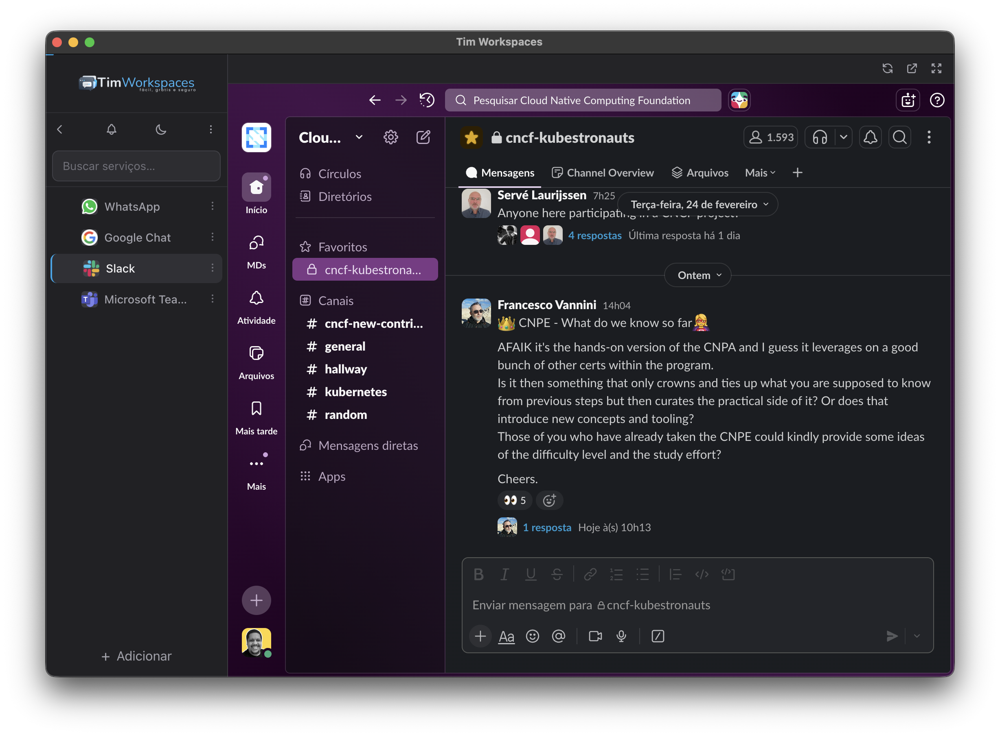
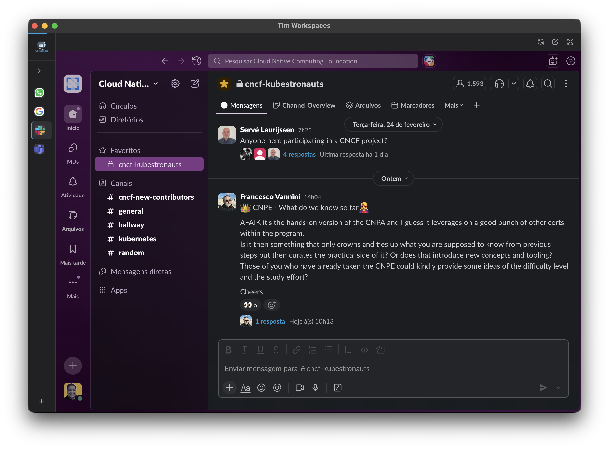

Todas as suas ferramentas.
Numa janela só.
Gmail, WhatsApp, Teams, Slack e outros, tudo numa janela só, sem abrir 47 abas.
macOS · Windows · Linux — grátis e open source



Recursos
Feito pra quem vive em 10 apps ao mesmo tempo
Tudo num lugar
Gmail, WhatsApp, Teams, Slack ou qualquer site. Cada um com sessão própria, sem misturar contas.
Workspaces
Separa trabalho, freela e pessoal. Troca de contexto num clique.
Leve de verdade
Serviços parados hibernam sozinhos e o cache se limpa. Memória e disco sob controle.
Notificações no seu ritmo
Silencia um serviço ou todos de uma vez. Foco quando precisa.
Chamadas e tela
Compartilha tela, câmera, microfone e devices nas reuniões, sem gambiarra.
Privado
Tudo fica no seu computador. Sem conta, sem servidor, sem telemetria.
Baixar
Escolha seu sistema
Sem rastreio
Não preciso do seus dados não.
Observação: Esse app é um hobbie por enquanto. Pode ter bugs (muitos as vezes) se descobrir algum, abre issue pra nóix lá no GitHub.